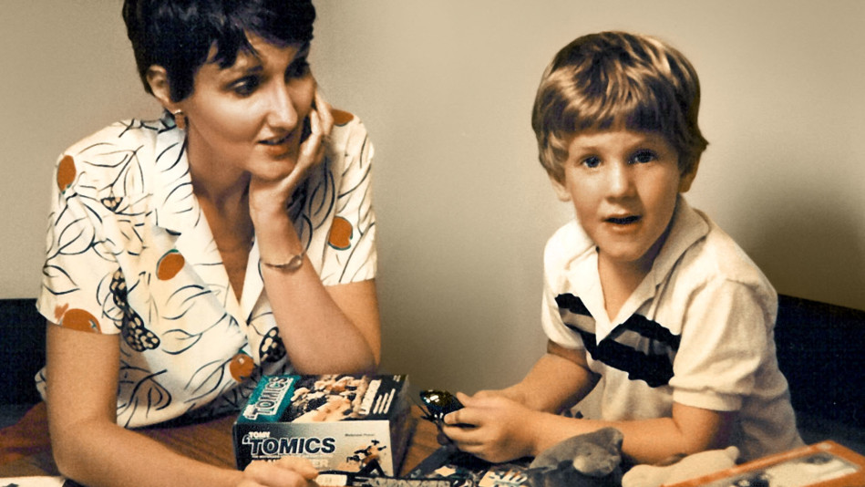

Wound-Logic and the Novel
June 2, 2026

There's a term that gets used loosely in workshops and craft books, sometimes as though it were a synonym for backstory: the character's wound. The wound is where something happened. The wound explains why the character behaves strangely. Give your character a wound, the advice goes, and the psychology will follow.
But this understates the problem, as well as the opportunity. A wound isn't a cause that produces effects. A wound is a logic: a complete, internally coherent system by which a damaged person interprets reality, assigns meaning, and makes decisions. And those decisions have consequences. Once you understand that, the question is no longer what happened to your character. It is: what does your character believe, as a direct result of what happened, that is systematically and invisibly wrong?
Sue Klebold's memoir A Mother's Reckoning gives us one of the most precise accounts of wound-logic. It is worth reading not only for understanding grief but as a study of how a wound operates. In the person who carries it, and in the people closest to them.
I. The wound creates a perceptual filter
Dylan Klebold, as his mother Sue reconstructs him across years of motherhood, was not a boy whose pain was invisible. It was legible. The criminal behavior existed. The distress was present and, in retrospect, obvious. What makes the memoir devastating is not the revelation of suffering but the revelation of how thoroughly that suffering was seen yet reframed by everyone around it, including by Dylan himself.
This is the first function of wound-logic: it does not simply generate behavior, it also generates interpretation. The wounded person does not experience their wound as damage. They experience it as clarity. They have a theory of reality — of what they deserve, what others feel, what connection means, what the future holds — and that theory is the wound expressing itself.
For the novelist, this is the engine. A character with a wound does not simply act in damaged ways. They act in ways that are perfectly rational given their particular distortion. From inside their logic, every choice makes sense. The reader can see the distortion; the character cannot. That gap between the character's experienced coherence and the reader's perception of the error is where psychological suspense lives.
II. The wound hides from its carrier
Klebold describes her own blindness with remarkable precision. She's not writing about denial in the crude sense, as in choosing not to see what was visible. She's writing about the more interesting phenomenon: genuinely not having the conceptual vocabulary to recognize what she was observing. Dylan's wound, and Sue's assumptions about who he was, produced an interpretive field that made certain readings of events simply unavailable. And it's in this gap where tragedy unfolded.
She had learned, over years, to read Dylan's affect through a particular lens. That lens was itself shaped by her formation, her marriage, her particular understanding of motherhood and adolescent withdrawal.
She writes about the toxic atmosphere and the bullying Dylan endured at Columbine High School. When he came home one day after what he called the "worst day of my life," she reassured herself: Kids have disagreements. Whatever it is, it'll blow over (p. 189). The tragedy lay not in a failure to see, but in a failure to understand the significance of what she was seeing.
This is the second function of wound-logic, and it's more useful for fiction than the first: the wound is most powerful when the character cannot name it. Characters who can articulate their damage with precision are, paradoxically, less interesting than characters who are operating under a misapprehension about themselves. Sue Klebold believed she knew her son. She had constructed a coherent, evidence-supported narrative of who he was. That narrative wasn't a lie. It was a wound wearing the face of understanding.
III. Writing it
What Klebold's memoir suggests, as a craft model, is not that we should write characters whose wounds are eventually revealed or explained. It suggests something harder: that we should construct characters whose wounds are present in every scene without ever being named as such.
This requires understanding what specific, falsifiable belief about reality does this person hold as a result of what was done to them? Not a vague sense of unworthiness, but something more precise: care is always eventually withdrawn. Vulnerability invites humiliation. If I need someone, they gain power over me.
Once you have that, you have the filter. Every scene passes through it. Every piece of dialogue. The character will notice some things and miss others. They will misread emotional cues in a consistent direction. They will make choices that are locally coherent and globally catastrophic. The reader, tracking the distortion, will feel both the rightness of each decision from inside the character's logic and the terrible wrongness of it from the outside.
What Klebold's book ultimately demonstrates is that the most destructive wounds are not the ones that produce visible breakdowns. They are the ones that produce invisible coherence, meaning, a life that looks, from the outside, more or less intact, while the interior runs on a set of premises that are slowly, quietly incompatible with survival.